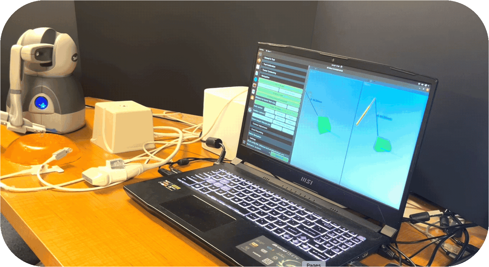

About
I’m a researcher in medical robotics and AI-driven surgical guidance, currently a Malone Postdoctoral Fellow at Johns Hopkins University, working with Dr. Russell H. Taylor and Dr. Axel Krieger. My research integrates imaging, robotics, and intelligent systems to advance precision cancer surgery. I completed my Ph.D. in July 2025 at Queen’s University in the Perk Lab and Med-i Lab, under the supervision of Dr. Gabor Fichtinger and Dr. Parvin Mousavi, with external mentorship from Dr. Taylor.
Research Highlights
🧠 SlicerROS2
Open-source bridge between 3D Slicer and ROS 2, enabling real-time communication between medical imaging and robotic systems.

🩺 Touching the Tumor Boundary
Integrates ultrasound sensing and haptic feedback to improve intraoperative margin detection.

Awards & Scholarships
🎓 Scholarships & Grants
- Malone Postdoctoral Fellowship – Johns Hopkins Malone Center for Engineering in Healthcare (2025)
- NSERC Postdoctoral Fellowship (PDF) (2025)
- Vector Research Grant (2023–2025)
- NSERC Michael Smith Foreign Study Supplement (MS-FSS) (2023)
- Queen’s University Tri-Agency Recipient Recognition Award (TARRA) (2022–2023)
- Walter C. Sumner Memorial Fellowship and Renewal (2022–2023)
- NSERC Canada Graduate Scholarship – Doctoral (CGS-D) (2022–2025)
- MediCREATE Training Award – NSERC CREATE Training Program in Medical Informatics (2021)
- Mitacs Globalink Research Award (2020 – deferred to 2021)
- NSERC Alexander Graham Bell Canada Graduate Scholarship – Master’s (CGS-M) (2021–2022)
- NSERC Undergraduate Student Research Award (USRA) (2019 & 2020)
🏆 Research Awards
- Best Application Award – Hamlyn Surgical Robotics Challenge (2025)
- Runner-Up – IEEE Research Excellence Award – Ph.D. Category, Kingston Section (2023)
- Best Demo Award – Advances in Simplifying Medical UltraSound (ASMUS), MICCAI Workshop (2023)
- Best Student Paper Award – IEEE International Conference on Autonomous Systems (ICAS) (2021)
- Student’s Choice Award – First Place, Electrical & Computer Engineering Capstone Demo Day (2020)
- PEO Student Paper Competition Finalist (2019)
🎤 Presentation Awards
- IPCAI ImFusion Long Abstract Audience Choice Award (2025)
- IPCAI J&J MedTech Best Presentation Audience Choice Award (2025)
- Best Presentation Award (Image-Guided Interventions & Surgery) – ImNO × IGT Symposium (2025)
- Best Presentation Award (Image-Guided Interventions) – Imaging Network of Ontario (ImNO) (2024)
- Runner-Up – Queen’s 3 Minute Thesis Competition (2021)
- Best Pitch Award (Image-Guided Surgery) – Imaging Network of Ontario (ImNO) (2021)
💡 Reviewer Awards
- Outstanding Reviewer Award – IPCAI (selected out of 147 reviewers) (2024)
- Outstanding Reviewer Award – MICCAI (selected out of 1659 reviewers) (2023)
Curriculum Vitae
You can download my full CV below:
Contact
You can reach me at either of the following email addresses: